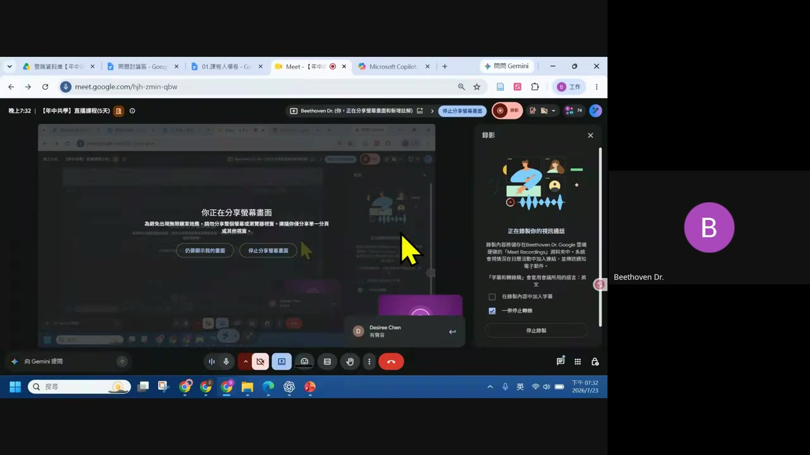
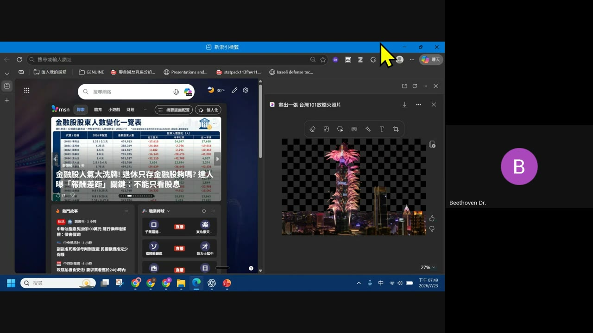
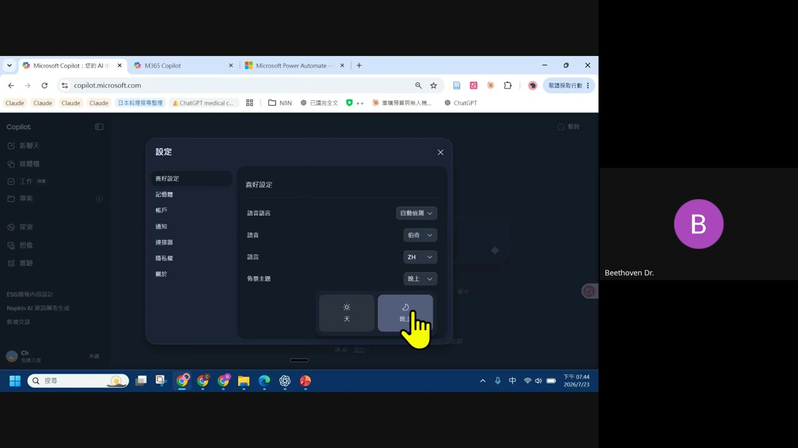

0. 課程資訊與教材
| 課程名稱 | EP202607.23「Microsoft Copilot × Power Automate：讓 AI 進入辦公流程」（年中共學 5 天系列之一） |
|---|---|
| 頻道 | 生成式 AI 應用電台・年中共學 |
| 直播日期 | 2026/07/23（畫面時鐘顯示 19:32–19:58） |
| 教材 | 官方課程簡報共 29 個編號重點（完整文字版），錄影回放 56 分鐘 |
| 一句話先懂 | Copilot 負責理解與生成（摘要、草擬、分類、比較、建議），Power Automate 負責受控執行（固定觸發、固定動作、可追蹤失敗）；正確架構是兩者分工，不是二選一。 |

1. 這堂課要回答的三件事＋三個產品定位
簡報開場（原文照錄）。
- Copilot、Microsoft 365 Copilot 與 Power Automate 各自解決什麼問題？
- 哪些「人工處理」可由 AI 協作縮短，哪些流程必須保留自動化引擎？
- 如何用授權、資料、風險與可驗證性，選對工具？
| 產品 | 定位 |
|---|---|
| Microsoft Copilot | 面向個人的網路型 AI；回答、寫作、創作與探索為主 |
| Microsoft 365 Copilot | 在工作帳號與 Microsoft 365 內容脈絡中協作 |
| Power Automate | 以觸發條件、連接器與規則，穩定地執行跨系統流程 |
先看帳號與授權，功能才不會說錯
- 免費 Copilot：核心聊天、網路搜尋、寫作與部分影像能力；登入可保留歷程與延長對話。
- Microsoft 365 個人／家用／Premium：可在 Office 應用程式使用更多 Copilot 功能，但有 AI 點數與使用量差異。
- 商務 Copilot 授權：可使用工作資料脈絡、組織代理程式與企業資料保護；功能仍受租戶設定控制。
2. 選工具的第一原則：結果可變，還是步驟必須固定？
- 需要摘要、草擬、分類、比較、建議：優先讓 Copilot 先處理「理解與生成」。
- 需要固定觸發、固定欄位、固定動作與可追蹤失敗：優先保留 Power Automate。
- 需要兩者：以 Copilot 產生內容或判讀，再由流程執行通知、核准、寫回與留痕。
3. Copilot（消費者版）完整功能
聊天與網路即時回答
以自然語言完成問答、摘要、改寫與規劃；可查證來源；登入後可用歷程與語音。
檔案、寫作與 Pages
可上傳檔案或影像，指定它做摘要、比較、擷取重點或根據內容寫作。可把聊天結果轉為 Copilot Pages，繼續編寫、改寫、列點、插表與保存構想。Pages 是共同撰寫的工作畫布，不等於事件驅動的自動化流程。
影像生成與編輯
以文字描述生成圖像；可用於構思、社群素材、海報與視覺草稿。可針對生成或上傳圖片提出編修需求，再反覆調整結果。輸出應視為草稿：人物、文字、品牌與版權敏感內容都需要人工審核。

Voice 與 Vision
Voice 讓使用者以口語對話；Vision 可理解使用者主動分享的螢幕、App 視窗或手機鏡頭畫面。Vision 可解釋畫面、標示位置與逐步引導；Windows 一次最多分享兩個 App。Vision 不會替你點擊、輸入或捲動：它是看懂與建議，不是 RPA。
研究與連接資料
Deep Research 可產生多來源研究報告；官方已公告 2026/08/18 起將自消費者 Copilot 退役。Microsoft 365 Premium 可改用 Researcher；它適合較慢但有結構、來源與可分享報告的研究任務。個人連接器可在同意後找 Outlook 或 Gmail 的郵件、聯絡人與行事曆；先確認資料範圍。
Copilot on Windows：桌面工作入口
Windows 版支援快捷鍵、喚醒詞、Vision、螢幕擷取與網頁內容檢視。可搜尋、開啟並詢問本機或同步到 OneDrive 的檔案內容。可協助 Windows 設定與操作指引；真正修改設定或完成動作仍由使用者確認。

4. 消費者 Copilot 能取代與不能取代的
| 能減少手工的部分 | 還做不到的部分 |
|---|---|
| 把「找資料、讀內容、寫初稿、整理待辦」從數十分鐘縮短為對話式工作 | 沒有通用的事件觸發、重試、分支、執行紀錄與跨系統服務帳號模型 |
5. M365 Copilot：從「個人回答」進入「工作脈絡」
工作入口：Chat、Search、Library、Agents、Create——依既有權限使用工作內容。
工作資料基礎：Microsoft Graph、權限與企業資料保護
- Copilot 只能在既有權限內存取檔案、郵件、聊天、會議與網站；它不會自動越權。
- 企業資料保護涵蓋傳輸與靜態加密、租戶隔離、敏感度標籤、保留政策與稽核。
- Copilot 不會用企業資料訓練公開模型；但過度共用的資料權限仍是治理風險。
M365 Copilot Chat：Web、Work、Search 與引用
Chat 可用工作內容或網路內容回答；是否可用 Work 與 Web 取決於授權與管理員設定。Search 用來找檔案、電子郵件與資訊；回答可帶引用，讓使用者回到原始資料驗證。把檔案、連結與明確限制放進提示詞，可提升回答的相關性與可追溯性。
Copilot Pages：把對話變成可共同維護的成果
將 Chat 回覆移到可持續編輯的頁面；可要求 Copilot 續寫、改寫或回答頁面內容。同事可協作同一 Page，不必取得原始聊天紀錄；可再轉成 Word 或 PowerPoint。適合把會議構想、研究摘要、決策草案變成共用工作物，而非建立流程。
Copilot Notebooks：用有限來源，得到聚焦回答
Notebook 可放 Word、PowerPoint、Excel、Copilot Pages 等參考資料；Copilot 只以此範圍回答。可建立專案指示，讓輸出長期維持既定語氣、格式或任務角色。商務帳號可生成 Audio Overview；適合快速吸收專案、研究或會議資料。
6. M365 Copilot 深入各應用程式
| 應用 | Copilot 能做的事 |
|---|---|
| Word | 由提示、筆記、大綱或參考檔案起草；可重組段落、縮寫、調整語氣、補結論；摘要長文件、回答文件問題、找待辦或壓力測試論點。共用文件中先提出變更預覽，核准後才寫入原檔。 |
| Outlook | 摘要長郵件串、根據脈絡草擬回覆、用 Coaching 改善語氣清晰度；理解收件匣與行事曆並協助建立會議或專注時間。「讀與寫」加速，通知歸檔轉寄分流仍屬 Flow 強項。 |
| Teams | 會議中或會後摘要誰說了什麼、建議行動項目並回答會議內容問題；開啟逐字稿後會後可在 Recap 持續提問；頻道聊天可快速整理主題、決策與待辦。 |
| Excel | 建立修改工作表、儲存格、公式、格式、圖表、樞紐分析與儀表板。Edit、Plan、Chat 三模式分別支援直接變更、先審計畫、僅分析不改檔。COPILOT 函數適合語意生成探索，不應取代需精確計算的規則。 |
| PowerPoint | 由主題或 Word/PDF 內容建立簡報，新增重組投影片並依品牌方向編修。可摘要整份簡報、回答投影片問題、找關鍵投影片與行動項目（約 40,000 字摘要）。Rewrite 可潤飾、濃縮或改專業語氣，仍要檢查內容版權品牌。 |
| OneNote／Loop／SharePoint／Planner | OneNote 可把頁面筆記摘要成待辦、專案計畫或依期限排序的清單；Pages 可用 OneDrive、SharePoint、Teams、Loop、會議、Planner、To Do 與行事曆等可存取脈絡。這些工具讓人更快讀懂與編寫工作內容，本身不等於事件式跨服務自動化。 |
7. Create、Brand kits、Agents 與 Researcher
- Create、Brand kits 與影片：Create 可產生影像、資訊圖、海報、橫幅與短影片；部分功能須組織啟用 Clipchamp。Brand kit 可集中標誌、色票、字體、模板、圖像規則、語氣與資料視覺化樣式；品牌管理者維護官方套件，Copilot 可套用已核准的品牌元素。
- Agents 與 Researcher：Agents 可加入組織知識、指示與工具，協助重複任務、洞察與業務流程執行。Researcher 針對複雜、多步研究，整合網路與可存取工作資料，輸出結構化且有來源的報告。Agent 不是免治理的自動化：要明確定義資料來源、可做動作、身分驗證、測試與監控。
- Workflows Agent：最接近「以對話取代建 Flow」的功能——只要描述需求，即可為 Outlook、SharePoint、Teams、Planner 等建立支援服務的工作流程；支援排程、事件觸發、Teams Adaptive Card 收集輸入，並可在視覺化設計器測試與管理。截至 2026/07 屬 Frontier 早期體驗，從美國英文市場開始；不可假設每個租戶都已可用。
8. Power Automate 仍不可取代的核心能力
| 能力 | 說明 |
|---|---|
| 雲端流程 | 事件觸發，跨服務執行動作 |
| 桌面 RPA 與維運 | 桌面自動化，保留紀錄與錯誤處理 |
9. 哪些工作可取代、哪些要保留 Power Automate＋導入路線
| 可由 Copilot 取代或大幅減少 | 必須保留 Power Automate |
|---|---|
| 每日郵件整理、會議紀要、初稿與摘要：由 Copilot 即時完成，通常不必先建 Flow | 涉及付款、核准、合規留存、客戶通知、主資料寫回或 SLA 的流程，必須有可預測的規則與稽核 |
| 臨時研究、文件比較、表格洞察、簡報草稿：由 Chat、Notebooks、Office Copilot 完成 | 需要第三方系統、服務帳號、複雜重試、例外處理、桌面 RPA 或高頻大量執行時 |
| 個人例行通知與簡單 M365 動作：可評估 Workflows Agent，先確認可用性與審核機制 | — |
導入路線：先 AI 輔助，再決定是否自動化
- 挑選高頻、低風險、文字與知識密集的工作，用 Copilot 先做人工在迴路試行。
- 量化節省時間、錯誤類型與人工覆核點；把可重複的決策條件寫清楚。
- 只有流程穩定後才用 Power Automate 或 Agent flow 固化，並持續驗證來源、權限與輸出。
10. 重點整理
- 三個產品各司其職：Copilot（個人回答）、M365 Copilot（工作脈絡）、Power Automate（受控執行）。
- 選工具看「結果是否可變」：可變、需理解生成用 Copilot；固定步驟、需稽核用 Power Automate。
- Vision 不是 RPA：Copilot Vision 看懂畫面、給建議，不會替你點擊操作。
- Deep Research 即將退役：2026/08/18 起自消費者 Copilot 移除，改用 Researcher（M365 Premium）。
- Agent 不是免治理的自動化：仍要定義資料來源、身分驗證、測試與監控。
- 導入路線三步驟：先 Copilot 試行 → 量化效益 → 流程穩定後才用 Power Automate 固化。
11. 資料來源與製作說明
- 原始教材：EP202607.23「Microsoft Copilot × Power Automate：讓 AI 進入辦公流程」官方課程簡報（29 個編號重點，完整文字版）＋錄影回放（56 分鐘）；均為 anyone-reader 權限、公開可下載。
- 製作方式：本集簡報為文字／向量型投影片，read_file_content 直接取得完整逐字內容 → 對照下載錄影抽取的畫面關鍵幀（場景變化偵測）核對實際示範畫面 → 整理成本頁章節。內容為真實課程內容，非推測改寫。
- 誠實聲明：本頁以簡報全文為主要依據，畫面截圖作為輔助佐證；因簡報文字內容已相當完整，未逐字轉寫全部錄影逐字稿，示範操作的口語細節若與截圖不符，以截圖畫面為準。
- 介面參考：版型沿用本站 EP29–EP47 課堂筆記的乾淨白底編輯風格。